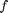
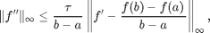
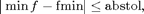

funmin_g
1-D guaranteed global minimum value on [a,b] and the subset containing optimal solutions
Contents
Syntax
fmin = funmin_g(f)
fmin = funmin_g(f,a,b,abstol,TolX)
fmin = funmin_g(f,'a',a,'b',b,'abstol',abstol,'TolX',TolX)
fmin = funmin_g(f,in_param)
[fmin, out_param] = funmin_g(f,...)
Description
fmin = funmin_g(f) finds minimum value of function f on the default interval [0,1] within the guaranteed absolute error tolerance of 1e-6 and the X tolerance of 1e-3. Default initial number of points is 100 and default cost budget is 1e7. Input f is a function handle.
fmin = funmin_g(f,a,b,abstol,TolX) finds minimum value of function f with ordered input parameters that define the finite interval [a,b], a guaranteed absolute error tolerance abstol and a guaranteed X tolerance TolX.
fmin = funmin_g(f,'a',a,'b',b,'abstol',abstol,'TolX',TolX) finds minimum value of function f on the interval [a,b] with a guaranteed absolute error tolerance abstol and a guaranteed X tolerance TolX. All five field-value pairs are optional and can be supplied in different order.
fmin = funmin_g(f,in_param) finds minimum value of function f on the interval [in_param.a,in_param.b] with a guaranteed absolute error tolerance in_param.abstol and a guaranteed X tolerance in_param.TolX. If a field is not specified, the default value is used.
[fmin, out_param] = funmin_g(f,...) returns minimum value fmin of function f and an output structure out_param.
Input Arguments
- f --- input function
- in_param.a --- left end point of interval, default value is 0
- in_param.b --- right end point of interval, default value is 1
- in_param.abstol --- guaranteed absolute error tolerance, default value is 1e-6.
- in_param.TolX --- guaranteed X tolerance, default value is 1e-3.
Optional Input Arguments
- in_param.nlo --- lower bound of initial number of points we used, default value is 10
- in_param.nhi --- upper bound of initial number of points we used, default value is 1000
- in_param.nmax --- cost budget, default value is 1e7.
Output Arguments
- out_param.f --- input function
- out_param.a --- left end point of interval
- out_param.b --- right end point of interval
- out_param.abstol --- guaranteed absolute error tolerance
- out_param.TolX --- guaranteed X tolerance
- out_param.nlo --- a lower bound of initial number of points we use
- out_param.nhi --- an upper bound of initial number of points we use
- out_param.nmax --- cost budget
- out_param.ninit --- initial number of points we use
- out_param.tau --- latest value of tau
- out_param.npoints --- number of points needed to reach the guaranteed absolute error tolerance or the guaranteed X tolerance
- out_param.exitflag --- the state of program when exiting:
- 0 Success
- 1 Number of points used is greater than out_param.nmax
- out_param.errest --- estimation of the absolute error bound
- out_param.volumeX --- the volume of intervals containing the point(s) where the minimum occurs
- out_param.tauchange --- it is 1 if out_param.tau changes, otherwise it is 0
- out_param.intervals --- the intervals containing point(s) where the minimum occurs. Each column indicates one interval where the first row is the left point and the second row is the right point.
Guarantee
If the function to be minimized,  satisfies the cone condition

then the output by this algorithm is guaranteed to satisfy

or
provided the flag
Examples
Example 1
f=@(x) (x-0.3).^2+1; [fmin,out_param] = funmin_g(f)
% Minimize function (x-0.3)^2+1 with default input parameter.
fmin =
1.0000
out_param =
f: @(x)(x-0.3).^2+1
a: 0
b: 1
abstol: 1.0000e-06
TolX: 1.0000e-03
nlo: 10
nhi: 1000
nmax: 10000000
ninit: 100
tau: 197
exitflag: 0
npoints: 6337
errest: 6.1554e-07
volumeX: 0.0015
tauchange: 0
intervals: [2x1 double]
Example 2
f=@(x) (x-0.3).^2+1; [fmin,out_param] = funmin_g(f,-2,2,1e-7,1e-4,10,10,1000000) % Minimize function (x-0.3)^2+1 on [-2,2] with error tolerance 1e-4, X % tolerance 1e-2, cost budget 1000000, lower bound of initial number of % points 10 and upper bound of initial number of points 10
fmin =
1.0000
out_param =
a: -2
abstol: 1.0000e-07
b: 2
f: @(x)(x-0.3).^2+1
nhi: 10
nlo: 10
nmax: 1000000
TolX: 1.0000e-04
ninit: 10
tau: 17
exitflag: 0
npoints: 18433
errest: 9.5464e-08
volumeX: 5.4175e-04
tauchange: 0
intervals: [2x1 double]
Example 3
clear in_param; in_param.a = -13; in_param.b = 8; in_param.abstol = 1e-7; in_param.TolX = 1e-4; in_param.nlo = 10; in_param.nhi = 100; in_param.nmax = 10^6; [fmin,out_param] = funmin_g(f,in_param) % Minimize function (x-0.3)^2+1 on [-13,8] with error tolerance 1e-7, X % tolerance 1e-4, cost budget 1000000, lower bound of initial number of % points 10 and upper bound of initial number of points 100
fmin =
1
out_param =
a: -13
abstol: 1.0000e-07
b: 8
f: @(x)(x-0.3).^2+1
nhi: 100
nlo: 10
nmax: 1000000
TolX: 1.0000e-04
ninit: 91
tau: 179
exitflag: 0
npoints: 368641
errest: 7.1014e-08
volumeX: 5.2445e-04
tauchange: 0
intervals: [2x1 double]
Example 4
f=@(x) (x-0.3).^2+1; [fmin,out_param] = funmin_g(f,'a',-2,'b',2,'nhi',100,'nlo',10,... 'nmax',1e6,'abstol',1e-4,'TolX',1e-2) % Minimize function (x-0.3)^2+1 on [-2,2] with error tolerance 1e-4, X % tolerance 1e-2, cost budget 1000000, lower bound of initial number of % points 10 and upper bound of initial number of points 100
fmin =
1.0000
out_param =
a: -2
abstol: 1.0000e-04
b: 2
f: @(x)(x-0.3).^2+1
nhi: 100
nlo: 10
nmax: 1000000
TolX: 0.0100
ninit: 64
tau: 125
exitflag: 0
npoints: 2017
errest: 6.2273e-05
volumeX: 0.0146
tauchange: 0
intervals: [2x1 double]
See Also
References
[1] Xin Tong. A Guaranteed, Adaptive, Automatic Algorithm for Univariate Function Minimization, MS thesis, Illinois Institute of Technology, 2014.
[2] Sou-Cheng T. Choi, Fred J. Hickernell, Yuhan Ding, Lan Jiang, Lluis Antoni Jimenez Rugama, Xin Tong, Yizhi Zhang and Xuan Zhou, GAIL: Guaranteed Automatic Integration Library (Version 2.1) [MATLAB Software], 2015. Available from http://code.google.com/p/gail/
[3] Sou-Cheng T. Choi, MINRES-QLP Pack and Reliable Reproducible Research via Supportable Scientific Software, Journal of Open Research Software, Volume 2, Number 1, e22, pp. 1-7, 2014.
[4] Sou-Cheng T. Choi and Fred J. Hickernell, IIT MATH-573 Reliable Mathematical Software [Course Slides], Illinois Institute of Technology, Chicago, IL, 2013. Available from http://code.google.com/p/gail/
[5] Daniel S. Katz, Sou-Cheng T. Choi, Hilmar Lapp, Ketan Maheshwari, Frank Loffler, Matthew Turk, Marcus D. Hanwell, Nancy Wilkins-Diehr, James Hetherington, James Howison, Shel Swenson, Gabrielle D. Allen, Anne C. Elster, Bruce Berriman, Colin Venters, Summary of the First Workshop On Sustainable Software for Science: Practice And Experiences (WSSSPE1), Journal of Open Research Software, Volume 2, Number 1, e6, pp. 1-21, 2014.
If you find GAIL helpful in your work, please support us by citing the above papers, software, and materials.